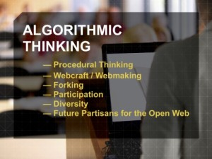

On Algorithmic Thinking
“You keep using that word. I do not think it means what you think it means.” – Inigo Montoya
I recently sat in on an online discussion with Cathy Davidson, whose work focuses on technology, collaboration, cognition, and learning. She recently wrote a blog post titled “Why We Need a 4th R: Reading, wRiting, aRithmetic, algoRithms“, in which she says:
…our world changed in April 1993 when the Mosaic 1.0 browser was released to the general public. We need new forms of education. We need to reform our learning institutions, concepts, and modes of assessment for our age… I have a basic literacy to add to the last century's 3 R's of "reading, 'riting, 'rithmetic." Let's add a 4th R: "algoRithm."
I’m all in favor of that. But I’m not sure that Davidson and I mean the same thing when we say “algorithm”–in fact, I’m pretty sure we don’t. Based on the slide that appears on this page, and on comments she made in that online discussion, her definition includes:
|  |
|
I’d definitely include the first; I’d say it was a prerequisite for the second, and plays into the third, but the rest feel like aspirational goals for society rather than anything algorithmic. Yes, the interweb is a powerful tool for implementing those goals (or their opposites), but “diversity” and “algorithm” have no more to do with each other than “justice” and “double-entry bookkeeping”.
What I mean by “algorithmic thinking” is, I think, closer to what Michelle Levesque is describing in this blog post (available here as a handy visual aid, complete with drop shadows). It’s what Jeannette Wing meant in her 2006 article that introduced the term “computational thinking”. Everyone immediately started using it to mean whatever they already wanted to push–office suite skills, parallel computing, how to search and filter–but Wing herself later defined it as:
Computational thinking is the thought processes involved in formulating problems and their solutions so that the solutions are represented in a form that can effectively be carried out by an information-processing agent.
She went on to say:
Computational thinking enables you to bend computation to your needs…to:
- understand which aspects of a problem are amenable to computation,
- evaluate the match between computational tools and techniques and a problem,
- understand the limitations and power of computational tools and techniques,
- apply or adapt a computational tool or technique to a new use,
- recognize an opportunity to use computation in a new way, and
- apply computational strategies such divide and conquer in any domain.
That’s a much narrower definition, but I think it’s also more useful. CollaboRation or paRticipation would make a great “zero’th R”, but they’re very opposite of “algorithmic”. They are, fundamentally, about the exercise of judgment in situations where right answers can’t be calculated by following a formula–in short, about the things that still distinguish us from machines.